A collection of prose poems
fin.
Image Sources:
01 https://pin.it/6K9UbUIHg
02 https://pin.it/2IeAFDC5W
03 https://pin.it/21yVRdDTF
04 https://pin.it/3cRicxeMx
05 https://pin.it/7Jms9mNAT
06 https://pin.it/36eL2t0v6
07 https://pin.it/2AmgfAHbq
08 https://pin.it/7KzSBLLo8
09 https://pin.it/535LHH2VV
10 https://pin.it/5K9OJZuwQ
Emotional Sketches · Soohyun Shim
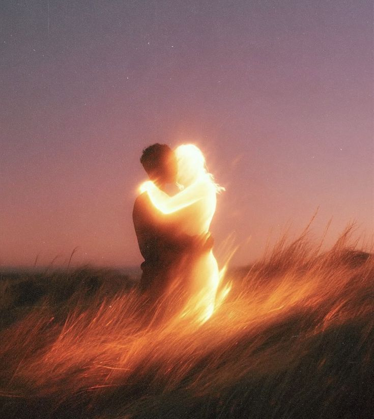
01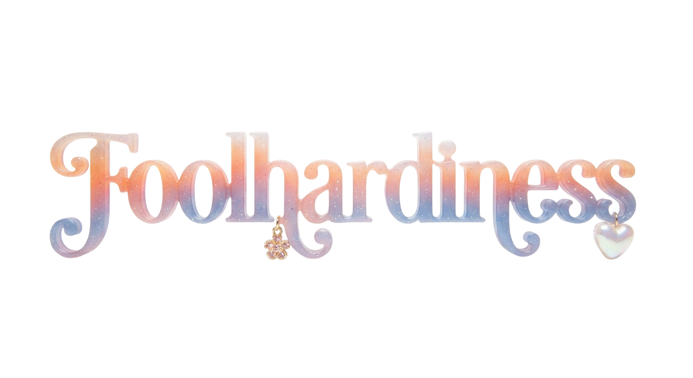
In the evenings, we drank beer so sweet it stung the tip of the tongue, and in that hazy glow, we admired each other’s flaws and loved each other’s assets.
On the bus ride home, the moon kept chasing after us.
When your hair brushed the nape of my neck, it felt like I might see the whole universe out the window. Sometimes I held my breath because there wasn’t enough air to inhale.
Beneath the autumn sun, a halo shadowed over your hair, and in that light, I glimpsed the outline of my love. When my fluttering palm touched the back of your hand, perhaps you felt it too.
We spent each day doing foolish, ridiculous things, as if diving into the air itself. But life was always too short, and the train of my dress too long. So nothing was left behind.
In the end, all that remained in the empty cocktail glass was a single crushed olive.
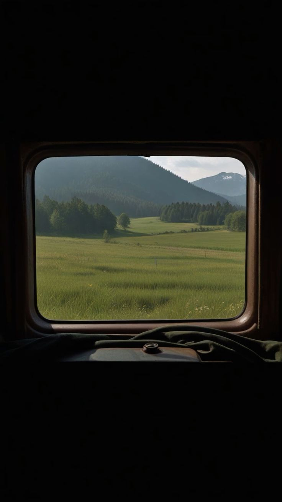
02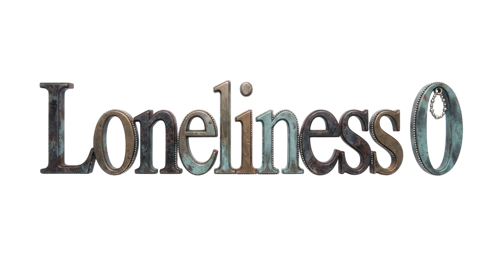
Sometimes, I’m struck by a fear so dizzying it feels like narrowly dodging a train as it barrels down the tracks. But the truth is, I boarded that train more than two decades ago. It’s been so long, I can’t even recall why or how I made that choice, but ever since, I’ve never stepped off the iron carriage.
The train always moved at a steady pace, never once breaking down, the scenery outside stretching endlessly like wilted ribbon.
With no one ever sitting beside me, I wrote poems about holding hands with strangers. Each poem was titled Loneliness. Loneliness 0, Loneliness 1, Loneliness 2, and so on.
And sometimes, I feared the destiny of arriving at a fixed place at a fixed time at a fixed speed. There are things in this life that are bound to happen. And beneath my tightly shut eyelids, I could feel helpless, powerful enough to make me shiver.
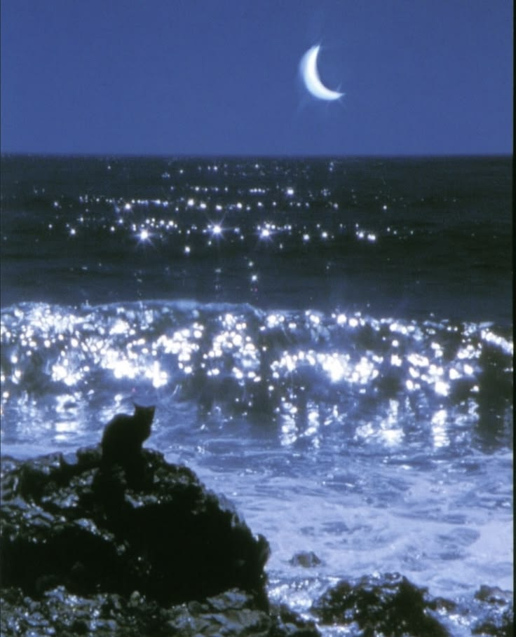
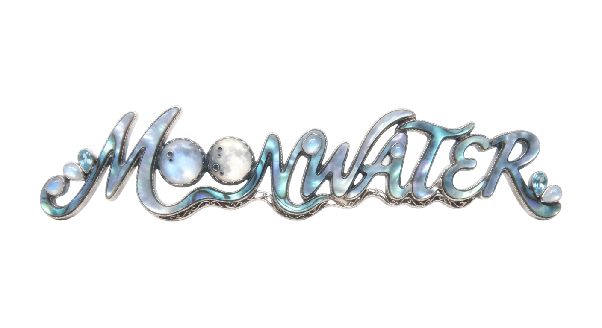
The night of the full moon, you cried for the first time.
Tears rolled down your chin, and for a moment, I thought you looked like me. Clinging, desperate, struggling to stay alive.
I had always settled.
You were a wolf on the open field.
Even though our farewell was inevitable, I still cupped my hands full of tears and sprinkled them over your head, hoping to see them glimmer.
In the end, everything just soaked into the ground.
It was a love like a soap bubble.
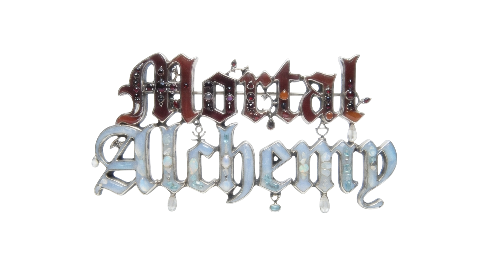
There are things in life we simply have to accept.
Just as water doesn’t taste like wine, and straw can’t turn into gold, life flows with an unyielding gravity.
Perhaps that’s why we bleed blood instead of wine.
Instead of shedding gold, we shed tears.
Because this paltry human body could never contain the fullness of a life.
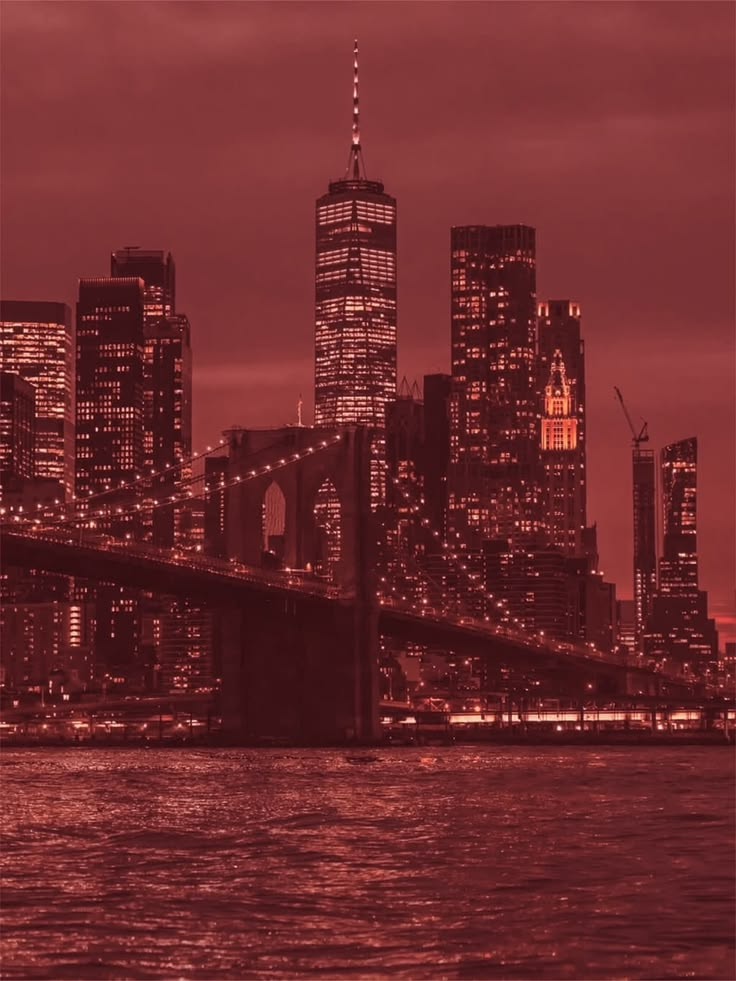
05
I danced in a land bathed in the moonlight of despair.
On the rooftop of a darkened red-brick house, only the countless city lights shone down on me.
Then you asked me, "Would it be alright if I made the sun rise again for you?"
The sun had long stopped moving, and the stars of dawn drifted slowly across the sky, circling us. When your painted nails brushed against my skin, tight with the cold, it felt as if the ground beneath my feet had given way.
Your eyes, glowing red in the reflected light, met mine. And at some point, the olive that should have been in your martini had crumbled into my champagne glass instead.
Dusty sunlight,
burning sunsets,
dried acacia.
Every moment with you was scarlet.
5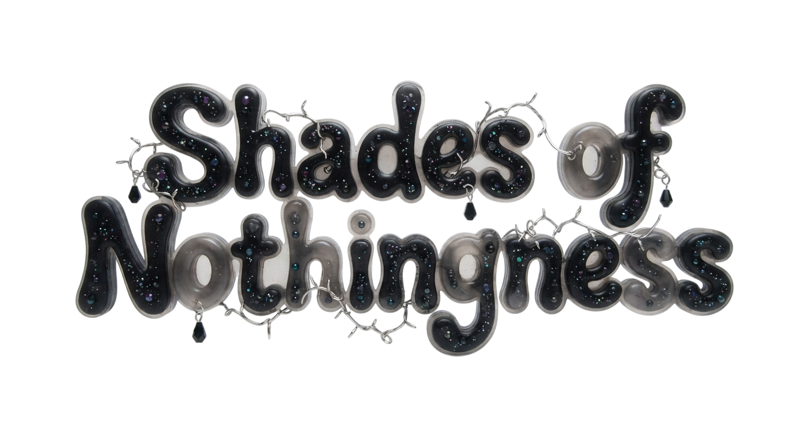
After a long silence, the old man finally spoke.
Things aren’t always what they seem.
Don’t try to read life like a story.
Instead, learn to listen to the sound of endings colliding.
The girl was the only one in the city of the blind cursed with sight.
It was hardly a remarkable gift, but if she had to name one good thing about it, it was knowing the exact shade of her favorite black shoes.
The village was always dark, and its people wore nothing but shades of gray.
So sometimes, the girl began to doubt her own gift.
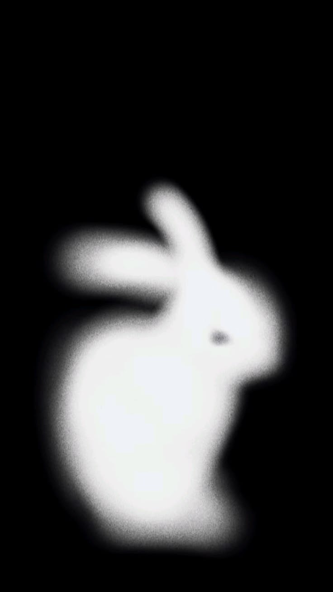
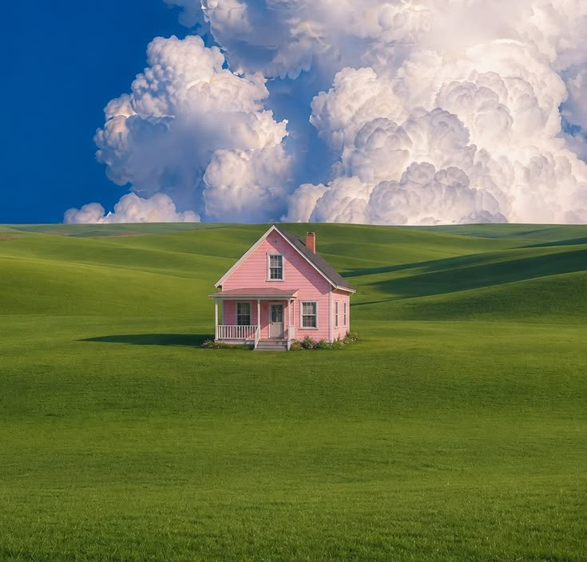
07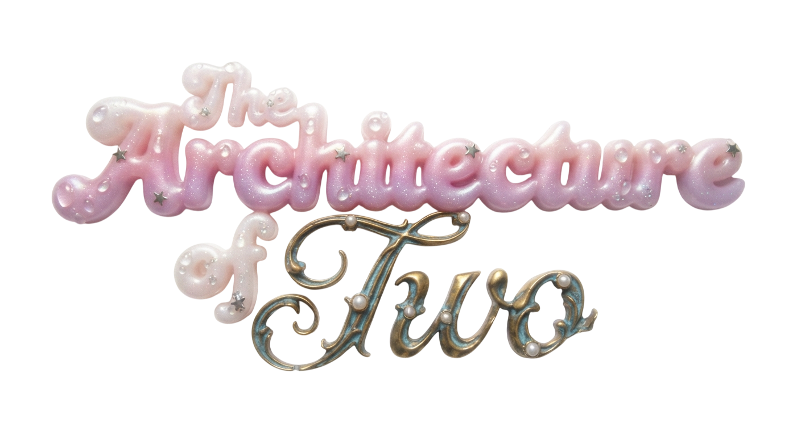
From the moment we are born, humans begin building homes between one another.
We hang doors, choose wallpaper, lay down tiles, all while looking each other in the face and smiling.
It takes quite some time to complete a house, so now and then, walking down the road, you might spot abandoned frames that are half-built, rusting here and there.
A boy built a house with a girl.
A small but beautiful house, shimmering with light.
Building it was hard work, exhausting at times, but even that exhaustion felt like a blessing to them. Because they were together every step of the way.
Once the house was complete, on rainy days and during snowstorms, they would fall asleep to the sound of water beads hitting the walls beneath the roof they shared.
Where did we first come undone, knotted wrong from the beginning, yet still forced to move forward? With legs limping from pain, bound by silky cords of suffering, how far could we have possibly gone?
The flow of life is, at times, brutally unkind. So you cried.
You cried often. You were often in pain, often in sorrow.
I learned how to bury the past beneath the scorching midday sun, burning enough to turn me to ash. But you. You became the moonlight at dawn, piercing the chest like a blade.
Unable to carry the vastness of your pain, of your past, you turned yourself into a stranger.
And in the passing of time, I could do nothing but hurt you.
8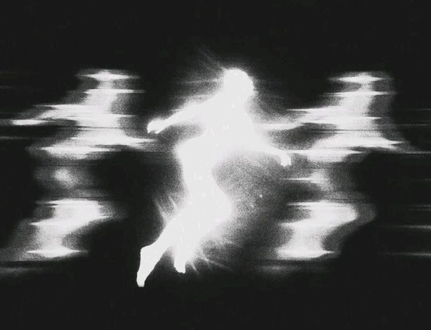
Water had filled my ears.
A dull hum. That was all I could hear.
Sound always hovered in the air, scattered and shapeless.
In the struggle to gather those formless hooks, my ears creaked,
and my heart trembled.
I often covered my ears to hear better.
Just as darkness melts into light,
stillness was always hidden inside noise.
I was chasing the white noise left behind
in the gaps of the atmosphere.
From me, came the sound of fingers combing through hair.
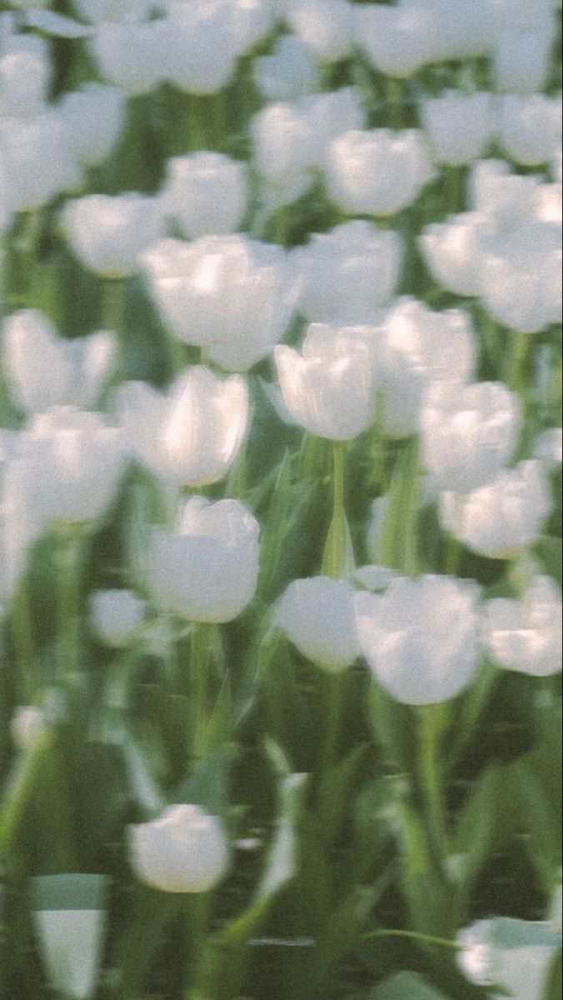
10
“Youth is a limited thing,” he always said.
”Give it five years, and we’ll all be pigs in cages, picking up whatever scraps of youth someone else dropped.”
He always talked like that, about how the waves were restless and the beach was endless. But the sea he knew must have been different from mine.
Whenever I watched the black waves rise and crash into the sand, breaking into pale white foam, I always felt the urge to cry.
Because I didn’t want to know what lay beneath them.
And so I made my case:
In the end, we’re all just children trapped in bodies too big to wear. When I look back, I don’t think I’ve changed much since I was six. Just rusted here and there, chipped a little more at the edges.
Life demands that we decide things instantly, like some wise old man. But me? I’ve always felt like I’m living with a damned gun pointed at my head.
Half-lived youth leaves nothing but ambiguity, and I’ve never wanted to wade into that murky puddle.